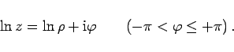

Inhalt Index DeskTop Bronstein

 Funktionentheorie Algebraische und elementare transzendente Funktionen Elementare transzendente Funktionen
Funktionentheorie Algebraische und elementare transzendente Funktionen Elementare transzendente Funktionen


| (14.74a) |
Wegen kann man schreiben
| (14.74b) |
 |
(14.74c) |
Da  eine mehrdeutige Funktion ist, gibt man gewöhnlich nur den Hauptwert des Logarithmus
eine mehrdeutige Funktion ist, gibt man gewöhnlich nur den Hauptwert des Logarithmus  an:
an:
|  | (14.74d) |
Die Funktion  ist für alle komplexen Zahlen definiert, ausgenommen die Null.
ist für alle komplexen Zahlen definiert, ausgenommen die Null.